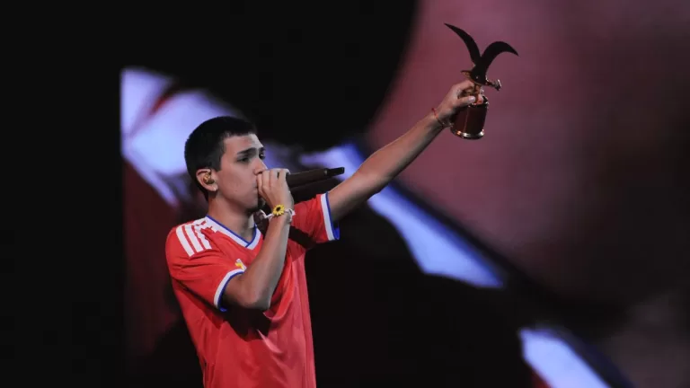

Camilo Joaquín Villarruel, conocido mundialmente como Milo J, es uno de los fenómenos más impresionantes de la
escena urbana argentina de los últimos años. Nacido el 25 de octubre de 2006 en Morón, Buenos Aires, pasó de
grabar canciones con recursos limitados en su barrio a liderar los ránkings globales en un tiempo récord.
Aquí tienes su biografía dividida por etapas, incluyendo los espacios y las sugerencias de las fotos ideales
para acompañar cada sección.
El chico de Morón: Inicios y primeros pasos
Desde muy pequeño, Milo mostró un interés natural por la música. A los 11 años ya escribía canciones con su
hermana y participaba en competencias de freestyle en las plazas de su barrio. En 2021, comenzó a lanzar sus
primeros sencillos independientes en YouTube, como "Tus Vueltas" y "Tu Paz". Su estilo melancólico, que mezclaba
el trap, el R&B y una voz inusualmente madura para su edad, empezó a llamar la atención de la escena
underground.
2022-2023: El despegue internacional y "Milagrosa"El punto de inflexión en su carrera llegó en agosto de 2022
con el lanzamiento de "Milagrosa", un tema que se volvió viral en TikTok y marcó un antes y un después.
A partir de ahí, su crecimiento fue meteórico. Colaboró con Yami Safdie en "El Bolero" y a principios de 2023
lanzó "Rara Vez" junto al productor Taiu, canción que acumuló millones de reproducciones y lo puso en el mapa
internacional.Sin embargo, el salto definitivo al estrellato mundial ocurrió en octubre de 2023, cuando con solo
16 años protagonizó la "BZRP Music Sessions #57" junto a Bizarrap.
Esta sesión no llegó sola, sino que formó parte de un EP conjunto llamado En dormir sin Madrid.Aquí la imagen
obligatoria es la portada del EP con Bizarrap o un fotograma del icónico video de la Session #57, ya que es el
momento que catapultó su carrera al público masivo.
Consolidación: De "111" a explorar el folklore
Milo J demostró rápidamente que no era un artista de un solo éxito. A finales de 2023 lanzó su primer álbum de estudio, 111, un proyecto introspectivo y en gran parte acústico con colaboraciones de Peso Pluma, Nicki Nicole y Yahritza y su Esencia. Este trabajo le valió nominaciones a los Latin Grammy y Premios Gardel (ganando Mejor Nuevo Artista en 2024).
En 2024, redobló la apuesta con su segundo álbum, 166, regresando de lleno a las raíces del trap. Fiel a su capacidad de reinvención, en septiembre de 2025 sorprendió a la crítica con su tercer disco, La vida era más corta, un álbum conceptual donde incorporó samples y reinterpretaciones de obras del folklore argentino, colaborando con leyendas como Trueno, Soledad Pastorutti y Silvio Rodríguez.
Giras Mundiales y el salto a los grandes estadios
Con un repertorio sólido y una base de fans global, Milo J se embarcó en giras masivas. A principios de 2026, brilló en festivales históricos como Cosquín y se llevó dos Gaviotas en el Festival de Viña del Mar, consolidando su estatus no solo como rapero, sino como un cantautor con una identidad innegable.
Para el cierre de la biografía, la foto perfecta es una imagen en vivo desde el escenario o un póster de su gira, que capture la magnitud de sus conciertos actuales y la conexión con el público.

Lanzado a fines de septiembre de 2025, La vida era más corta es probablemente el proyecto más ambicioso de Milo J hasta la fecha. En este álbum doble de 15 canciones, el artista de Morón demostró que su madurez musical va mucho más allá de su edad, creando un puente directo entre el trap, los ritmos urbanos y la raíz más profunda de la música latinoamericana y el folklore argentino.